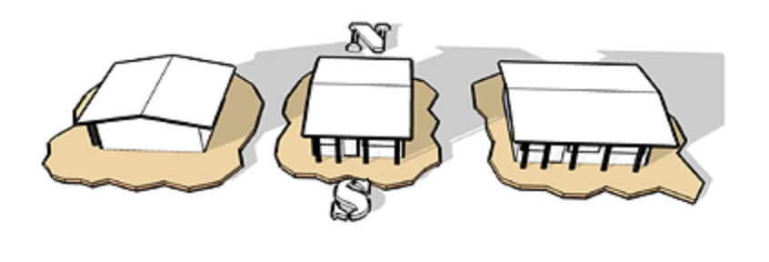
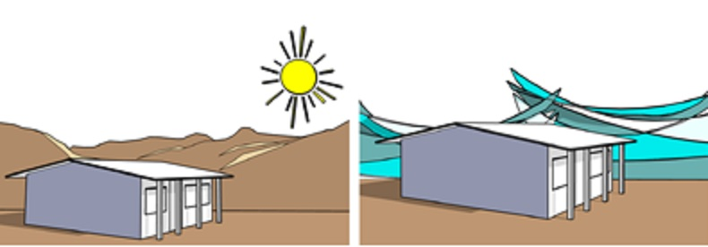
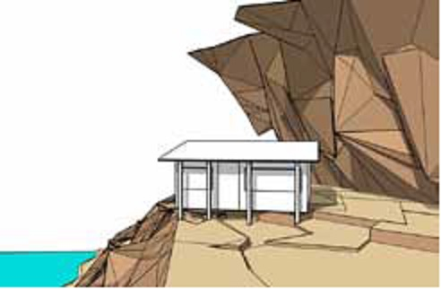

5.1. Orientación
Permite controlar los efectos de la radiación solar, de acuerdo a las condiciones de la temperatura ambiental para cada clima y depende de la ubicación geográfica del terreno. Para lograr una orientación adecuada se recomienda lo siguiente:
- Para climas fríos o templados: Se debe evitar Norte-Sur y orientar la vivienda hacia el Oeste-Este.
- Para climas cálidos: Evitar Oeste-Este y orientar la casa hacia el Norte-Sur. 
5.2. Clima
Se debe tener en cuenta el tipo de clima, debido a que puede estar provisto de intensas lluvias que determinarán techos con una gran inclinación, huracanes requieren mayor atención en la estructura de la casa, estar ubicado en lugares desérticos que obligará a subir el nivel del techo unos metros más. Por lo cual alterará la forma de la vivienda adecuada a las circunstancias del entorno.
5.3. Topografía
Se puede contar con un terreno plano o con muchos accidentes topográficos, pero se debe considerar en este último un incremento en el precio de construcción por la adecuación de la casa a la topografía, aunque posiblemente valga la pena por las vistas agradables que pudiera tener el lugar.
